Cafemio
WORK · RAUCH · LAUNCH CAMPAIGN IN 8 COUNTRIES · 72 FILMS
Cafemio launched in eight countries with two AI-cast leads, a sun-drenched Adriatic square that doesn't quite exist, and 72 versions of the films — 15, 10 and 6 seconds in every aspect ratio a media plan could ask for.
This is how Mila and Luka came to be.
01
Casting
Casting worked the way casting always works — contact sheets, callbacks, strong opinions — except nobody had an agent. Hundreds of candidates were generated, reviewed and argued over. The final Mila is a combination of two finalists: one had the right warmth, the other the right bones.
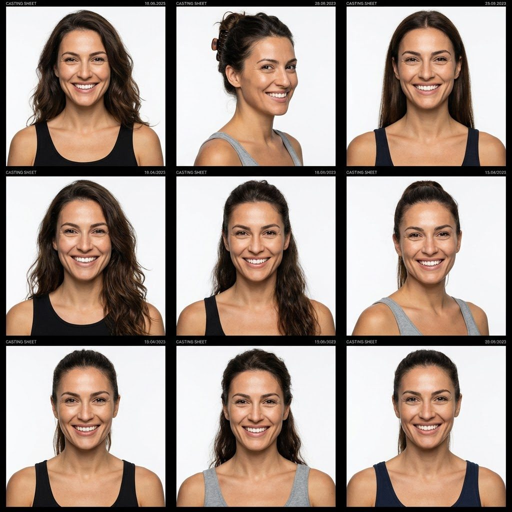
CASTING SESSION 01 — CONTACT SHEET
"This one has some weird choices but the bottom left one is ok"
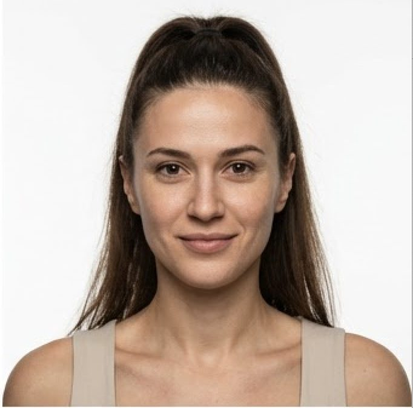
CALLBACK
"Could be her? But needs low ponytail haircut not high"
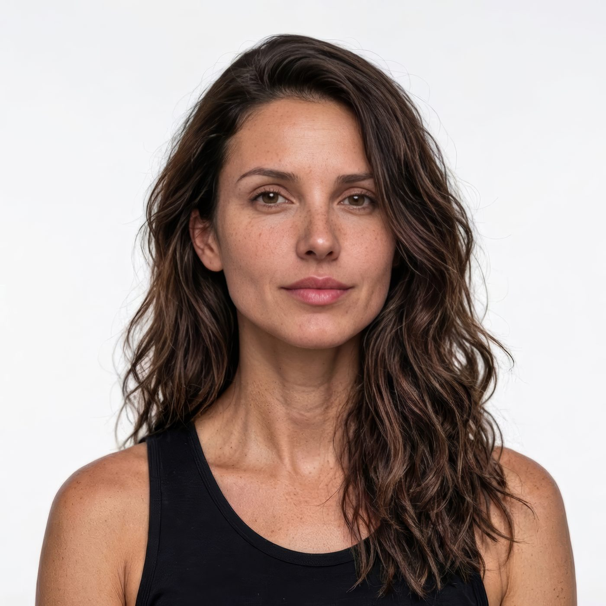
MILA — FINAL CAST
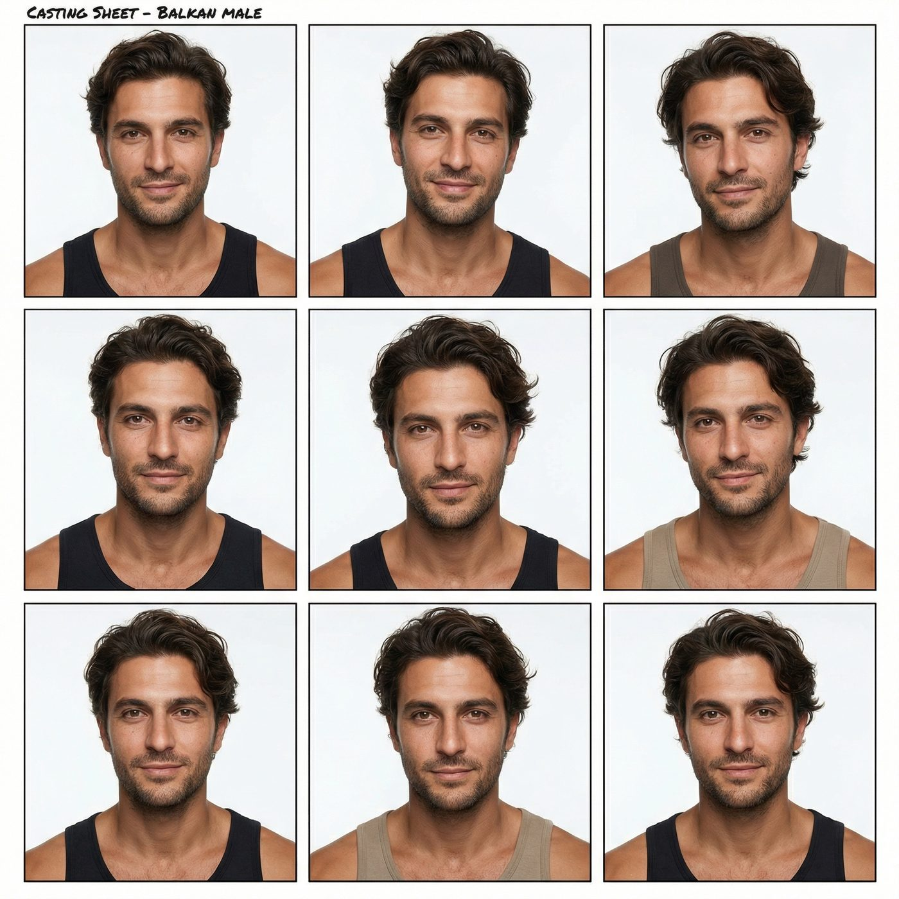
CASTING SESSION 02 — CONTACT SHEET
"FIRST TIME LUCKY?"
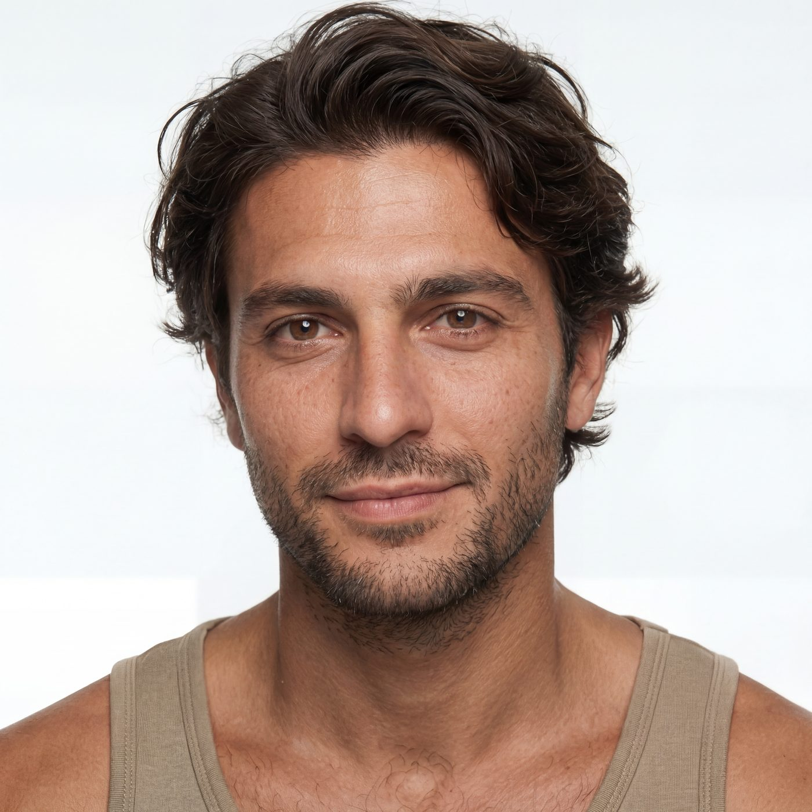
LUKA — FINAL CAST
02
Styling
Once cast, Luka went through wardrobe. Full coverage sets of looks — linen, knits, tailoring — were screen-tested against the location and the light before the final fitting.
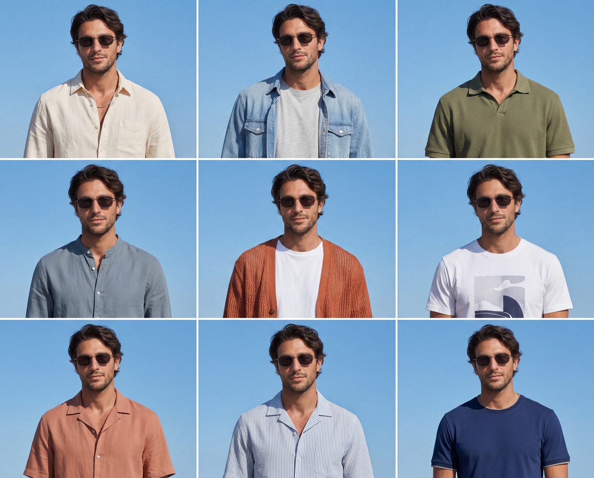
WARDROBE — SESSION 01
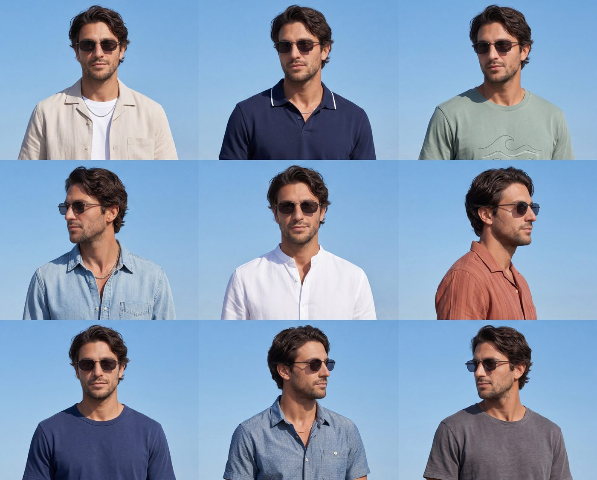
WARDROBE — SESSION 02
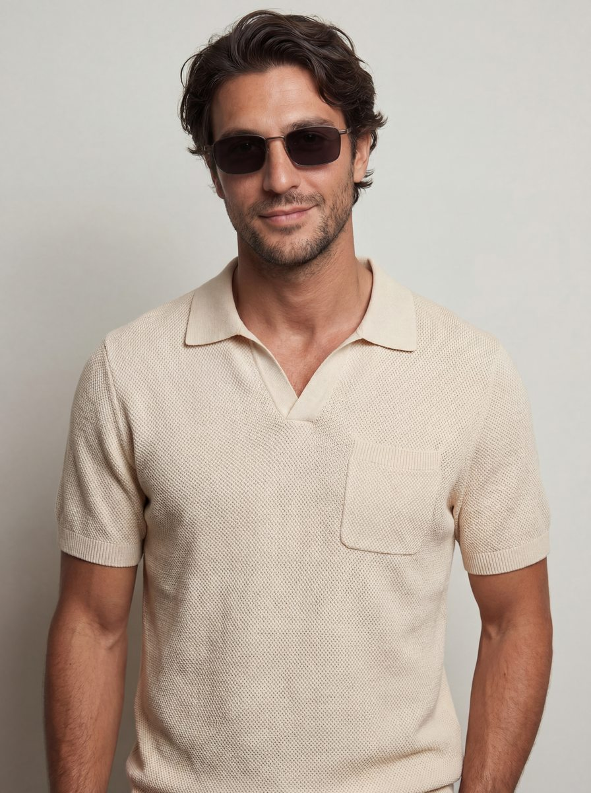
LUKA — FINAL LOOK
03
Locations
The brief called for Adriatic sunshine. We scouted the real thing — Dubrovnik's grand staircases, Split's palm-lined seafront — then built the feeling into a place of our own: a baroque stone staircase on a sunlit square, explored shot by shot until we knew it like a real location.
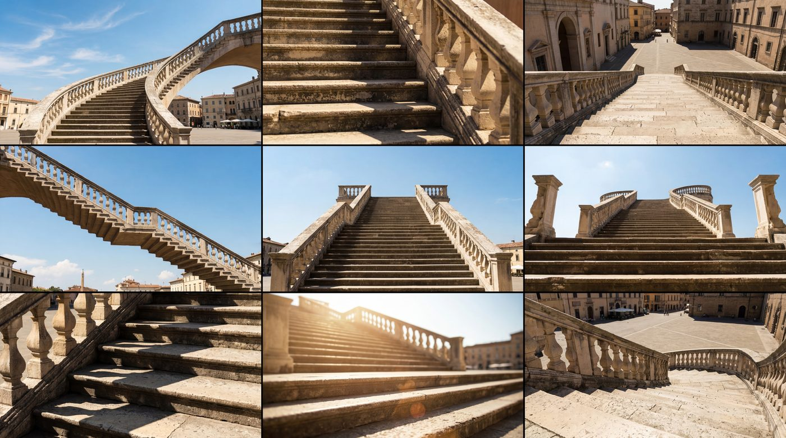
LOCATION COVERAGE — THE STAIRCASE
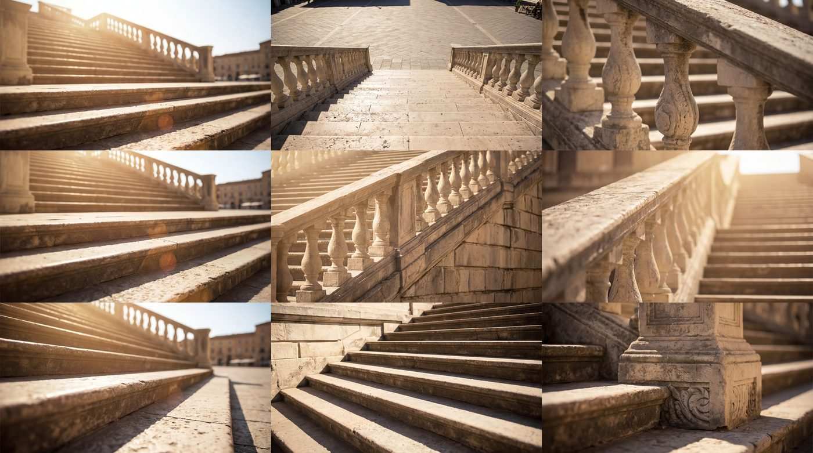
LOCATION COVERAGE — DETAILS
04
The Chair
Everything on screen gets cast — including the furniture. The café chair had its own audition: coverage sets of candidates in wicker and wood, screen-tested on the square until one earned the part.
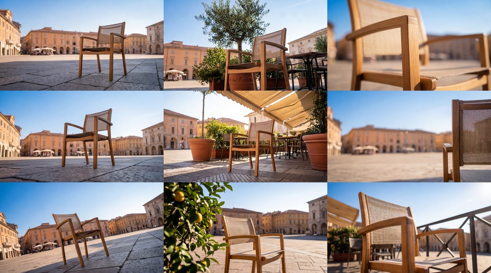
CHAIR CASTING — SESSION 01
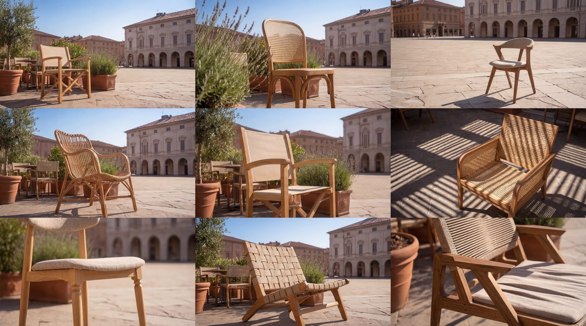
CHAIR CASTING — SESSION 02
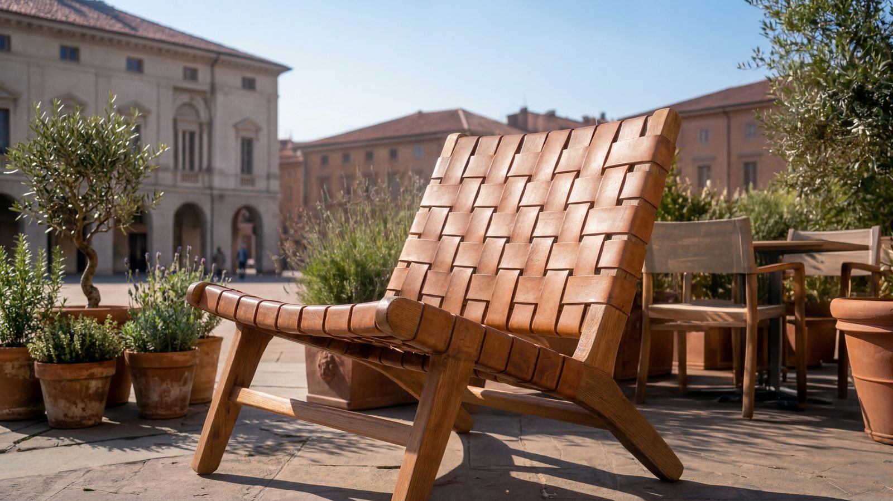
THE CHAIR — FINAL SELECTION
05
Every Format
Social campaigns don't live in one shape. Each film was crafted — not cropped — for every placement: 16:9, 4:5, 1:1 and 9:16, all playing here in sync from the same 15 seconds.
06
The Films
Two leads, one square, 72 deliverables: 15s, 10s and 6s in 16:9, 1:1, 4:5 and 9:16, each with three alternate pack shots. Where the product needed to be exactly right, generative AI was combined with bespoke CGI and Nuke compositing — so every bottle, label and pour is accurate to the real thing.